CODING AGENTS AS PIXEL WORLD MODELS
traex/DeepSeek-V4.1-Flash · phygen_117
点击播放 · 原生 RGB 像素
逐轮保存的候选
回放视频、检查图与代码变化。
每份候选均可单独播放。实际图片检查记录在下方工具轨迹中。
候选 01播放与检查图
点击播放 · 原生 RGB 像素
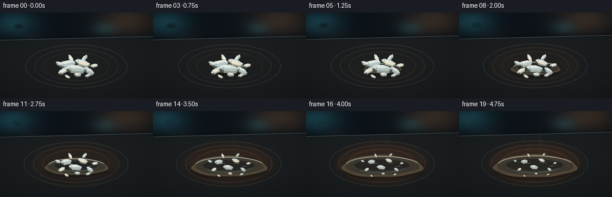
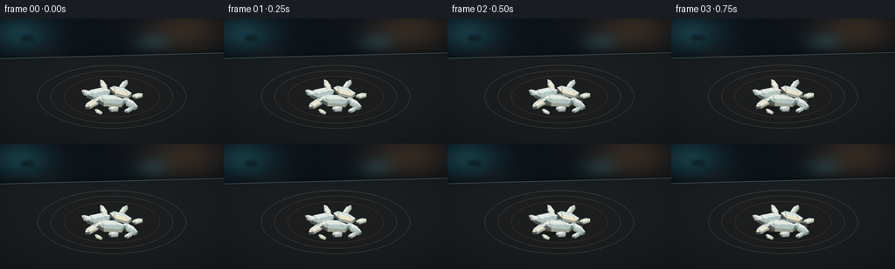
展开代码变化
--- 上一保存版本
+++ 本次保存版本
@@ -0,0 +1,427 @@
+"""Procedural thermal timelapse of naphthalene on a heated microscope stage."""
+
+from __future__ import annotations
+
+import math
+from pathlib import Path
+
+import numpy as np
+from PIL import Image, ImageDraw, ImageFilter
+
+import artifact_io
+
+
+WIDTH = 256
+HEIGHT = 144
+FRAMES = 20
+FPS = 4.0
+SS = 4
+
+
+def px(value: float) -> int:
+ return int(round(value * SS))
+
+
+def pts(values):
+ return [(px(x), px(y)) for x, y in values]
+
+
+def clamp01(value):
+ return max(0.0, min(1.0, value))
+
+
+def smoothstep(edge0, edge1, value):
+ x = clamp01((value - edge0) / (edge1 - edge0))
+ return x * x * (3.0 - 2.0 * x)
+
+
+def mix(a, b, t):
+ return tuple(int(round(a[i] * (1.0 - t) + b[i] * t)) for i in range(3))
+
+
+def rgba(color, alpha):
+ return tuple(color) + (int(max(0, min(255, alpha))),)
+
+
+def make_background():
+ w, h = WIDTH * SS, HEIGHT * SS
+ yy = np.linspace(0.0, 1.0, h, dtype=np.float32)[:, None]
+ xx = np.linspace(0.0, 1.0, w, dtype=np.float32)[None, :]
+ top = np.array([15, 22, 29], dtype=np.float32)
+ bottom = np.array([7, 10, 13], dtype=np.float32)
+ grad = top * (1.0 - yy[..., None]) + bottom * yy[..., None]
+
+ # Soft, out-of-focus lab lights in the dark background.
+ glow = np.zeros((h, w, 3), dtype=np.float32)
+ for cx, cy, radius, color, strength in [
+ (0.09, 0.13, 0.10, (31, 108, 120), 0.44),
+ (0.83, 0.10, 0.13, (150, 92, 44), 0.30),
+ (0.68, 0.20, 0.055, (34, 104, 112), 0.24),
+ (0.22, 0.34, 0.07, (90, 75, 55), 0.10),
+ ]:
+ d2 = (xx - cx) ** 2 + (yy - cy) ** 2
+ halo = np.exp(-d2 / (2.0 * radius * radius)).astype(np.float32)
+ glow += halo[..., None] * np.array(color, dtype=np.float32) * strength
+
+ image = np.clip(grad + glow, 0, 255).astype(np.uint8)
+ background = Image.fromarray(image, "RGB")
+ return background.filter(ImageFilter.GaussianBlur(px(1.0)))
+
+
+def make_metal_texture(size):
+ rng = np.random.default_rng(108)
+ w, h = size
+ fine = rng.normal(0.0, 6.0, (h // 3, w // 3)).astype(np.float32)
+ fine = np.asarray(
+ Image.fromarray(np.clip(fine + 128, 0, 255).astype(np.uint8)).resize(
+ (w, h), Image.Resampling.BICUBIC
+ ),
+ dtype=np.float32,
+ )
+ fine = (fine - 128.0) * 0.55
+ streak = rng.normal(0.0, 2.0, (1, w)).astype(np.float32)
+ streak = np.asarray(
+ Image.fromarray(np.clip(streak + 128, 0, 255).astype(np.uint8)).resize(
+ (w, h), Image.Resampling.BILINEAR
+ ),
+ dtype=np.float32,
+ )
+ texture = fine + (streak - 128.0) * 0.55
+ return texture
+
+
+BACKGROUND = make_background()
+METAL_TEXTURE = make_metal_texture((WIDTH * SS, HEIGHT * SS))
+
+
+def paste_soft_shadow(base, polygon, offset, blur, alpha=100, color=(0, 0, 0)):
+ layer = Image.new("RGBA", base.size, (0, 0, 0, 0))
+ draw = ImageDraw.Draw(layer)
+ shifted = [(x + px(offset[0]), y + px(offset[1])) for x, y in polygon]
+ draw.polygon(shifted, fill=rgba(color, alpha))
+ layer = layer.filter(ImageFilter.GaussianBlur(px(blur)))
+ base.alpha_composite(layer)
+
+
+def draw_hotplate(image, t):
+ draw = ImageDraw.Draw(image, "RGBA")
+ w, h = WIDTH, HEIGHT
+
+ # Stage body, slightly perspective-shaped so the sample reads as a macro object.
+ plate = pts([(-10, 48), (266, 41), (278, 153), (-18, 153)])
+ paste_soft_shadow(image, plate, (0, 3), 5.0, 180)
+
+ plate_layer = Image.new("RGBA", image.size, (0, 0, 0, 0))
+ pd = ImageDraw.Draw(plate_layer)
+ pd.polygon(plate, fill=(27, 31, 33, 255))
+ image.alpha_composite(plate_layer)
+
+ # Brushed dark ceramic / metal surface.
+ mask = Image.new("L", image.size, 0)
+ ImageDraw.Draw(mask).polygon(plate, fill=255)
+ texture = METAL_TEXTURE.copy()
+ texture += np.linspace(10, -8, texture.shape[0], dtype=np.float32)[:, None]
+ tex = Image.fromarray(np.clip(texture + 44, 0, 255).astype(np.uint8), "L")
+ tint = Image.new("RGBA", image.size, (26, 33, 35, 255))
+ tint.putalpha(mask)
+ tex_rgba = Image.merge("RGBA", (tint.split()[0], tint.split()[1], tint.split()[2], mask))
+ # Modulate the plate subtly with a multiply layer.
+ grain = Image.new("RGBA", image.size, (0, 0, 0, 0))
+ grain.paste(Image.new("RGBA", image.size, (50, 54, 52, 255)), (0, 0), tex.point(lambda p: p // 5))
+ image.alpha_composite(Image.composite(grain, Image.new("RGBA", image.size, (0, 0, 0, 0)), mask))
+
+ # Recessed concentric heater rings.
+ cx, cy = px(128), px(91)
+ for radius, color, width in [
+ (84, (54, 53, 48, 130), 1.0),
+ (69, (62, 56, 48, 90), 0.7),
+ (54, (69, 57, 46, 65), 0.55),
+ ]:
+ draw.ellipse(
+ (cx - px(radius), cy - px(radius * 0.43), cx + px(radius), cy + px(radius * 0.43)),
+ outline=color,
+ width=max(1, px(width)),
+ )
+
+ # Heat glow grows with temperature and stays concentrated around the sample.
+ heat = smoothstep(0.08, 0.94, t)
+ glow = Image.new("RGBA", image.size, (0, 0, 0, 0))
+ gd = ImageDraw.Draw(glow)
+ glow_color = mix((92, 43, 19), (205, 91, 24), heat)
+ for radius, alpha in [(78, 32), (62, 36), (47, 40), (33, 42)]:
+ gd.ellipse(
+ (cx - px(radius), cy - px(radius * 0.45), cx + px(radius), cy + px(radius * 0.45)),
+ fill=rgba(glow_color, alpha * (0.25 + 0.75 * heat)),
+ )
+ glow = glow.filter(ImageFilter.GaussianBlur(px(8.0)))
+ image.alpha_composite(glow)
+
+ # A cool rim light gives the stage depth.
+ draw.line(pts([(-9, 48), (266, 41)]), fill=(92, 113, 117, 160), width=px(0.7))
+ draw.line(pts([(-8, 51), (266, 44)]), fill=(23, 28, 30, 220), width=px(1.0))
+ draw.line(pts([(-11, 153), (278, 153)]), fill=(4, 6, 8, 230), width=px(3.0))
+
+
+def blob_polygon(cx, cy, rx, ry, phase, points=28, roughness=0.08):
+ result = []
+ for i in range(points):
+ a = 2.0 * math.pi * i / points
+ wobble = 1.0 + roughness * (
+ 0.65 * math.sin(3.0 * a + phase)
+ + 0.35 * math.sin(7.0 * a - phase * 1.4)
+ )
+ result.append((cx + rx * wobble * math.cos(a), cy + ry * wobble * math.sin(a)))
+ return result
+
+
+def draw_melt_pool(image, t):
+ if t < 0.08:
+ return
+ wet = smoothstep(0.08, 0.94, t)
+ cx, cy = 128.0, 94.0
+ rx = 26.0 + 40.0 * wet
+ ry = 7.5 + 11.0 * wet
+ phase = 0.45
+
+ pool = pts(blob_polygon(cx, cy + 1.0, rx, ry, phase, 36, 0.07))
+ paste_soft_shadow(image, pool, (0, 2.2), 3.2, 110)
+
+ layer = Image.new("RGBA", image.size, (0, 0, 0, 0))
+ ld = ImageDraw.Draw(layer)
+ # Layered translucent liquid gives a glassy edge and warmer depth.
+ outer = pts(blob_polygon(cx, cy + 1.0, rx, ry, phase, 36, 0.07))
+ inner = pts(blob_polygon(cx, cy, rx * 0.91, ry * 0.80, phase + 0.3, 32, 0.05))
+ core = pts(blob_polygon(cx - 1.0, cy - 1.0, rx * 0.68, ry * 0.50, phase + 0.8, 30, 0.04))
+ ld.polygon(outer, fill=(158, 141, 108, 105))
+ ld.polygon(inner, fill=(111, 111, 95, 95))
+ ld.polygon(core, fill=(59, 74, 75, 76))
+ layer = layer.filter(ImageFilter.GaussianBlur(px(0.55)))
+ image.alpha_composite(layer)
+
+ draw = ImageDraw.Draw(image, "RGBA")
+ # Meniscus highlights and reflected cool lab light.
+ draw.arc(
+ (px(cx - rx * 0.92), px(cy - ry * 0.82), px(cx + rx * 0.94), px(cy + ry * 0.92)),
+ 197,
+ 338,
+ fill=(213, 222, 208, 135),
+ width=px(0.65),
+ )
+ draw.arc(
+ (px(cx - rx * 0.72), px(cy - ry * 0.58), px(cx + rx * 0.62), px(cy + ry * 0.62)),
+ 20,
+ 136,
+ fill=(92, 131, 132, 105),
+ width=px(0.55),
+ )
+ for ox, oy, length, alpha in [
+ (-19, -3.5, 12, 120),
+ (9, -4.2, 9, 105),
+ (-4, 2.6, 7, 78),
+ (24, 1.0, 6, 70),
+ ]:
+ x0 = cx + ox * (0.55 + 0.45 * wet)
+ y0 = cy + oy * (0.55 + 0.45 * wet)
+ draw.line(
+ [(px(x0), px(y0)), (px(x0 + length * (0.55 + 0.45 * wet)), px(y0 - 0.35))],
+ fill=(239, 235, 216, alpha),
+ width=px(0.55),
+ )
+
+
+CRYSTALS = [
+ # x, y, length, width, angle(deg), height, tone
+ (113.0, 88.0, 27.0, 8.4, -8.0, 4.8, 0),
+ (138.0, 86.0, 25.0, 7.2, 16.0, 4.2, 1),
+ (127.0, 96.0, 31.0, 8.8, 4.0, 5.3, 0),
+ (106.0, 99.0, 17.0, 5.5, -28.0, 3.2, 1),
+ (149.0, 99.0, 18.0, 5.7, 31.0, 3.4, 0),
+ (119.0, 79.0, 14.0, 4.6, 58.0, 2.9, 1),
+ (141.0, 78.0, 13.0, 4.4, -47.0, 2.7, 0),
+ (100.0, 87.0, 13.0, 4.0, 18.0, 2.6, 0),
+ (157.0, 90.0, 12.0, 3.8, -14.0, 2.4, 1),
+ (130.0, 105.0, 12.0, 4.0, -3.0, 2.4, 0),
+ (113.0, 108.0, 9.0, 3.0, 23.0, 1.8, 1),
+ (147.0, 106.0, 10.0, 3.2, -24.0, 2.0, 0),
+]
+
+
+def rotated_polygon(cx, cy, length, width, angle, jitter=0.0, seed=0):
+ rng = np.random.default_rng(seed)
+ local = [
+ (-0.52, 0.00),
+ (-0.36, -0.47),
+ (0.12, -0.56),
+ (0.49, -0.13),
+ (0.38, 0.48),
+ (-0.24, 0.54),
+ ]
+ a = math.radians(angle)
+ ca, sa = math.cos(a), math.sin(a)
+ result = []
+ for lx, ly in local:
+ if jitter:
+ lx += rng.normal(0.0, jitter)
+ ly += rng.normal(0.0, jitter)
+ x = lx * length
+ y = ly * width
+ result.append((cx + x * ca - y * sa, cy + x * sa + y * ca))
+ return result
+
+
+def shrink_polygon(polygon, center, scale):
+ cx, cy = center
+ return [(cx + (x - cx) * scale, cy + (y - cy) * scale) for x, y in polygon]
+
+
+def draw_crystal(image, crystal, index, t):
+ x, y, length, width, angle, height, tone = crystal
+ # Naphthalene loses its sharp edge and bulk as it sublimes and melts.
+ onset = 0.08 + 0.025 * index
+ progress = smoothstep(onset, 0.96, t)
+ length_now = length * (1.0 - 0.61 * progress)
+ width_now = width * (1.0 - 0.44 * progress)
+ height_now = height * (1.0 - 0.78 * progress)
+
+ # The pile relaxes outward very slightly while the lower layer wets.
+ dx = (x - 128.0) * 0.10 * progress
+ dy = (y - 94.0) * 0.12 * progress + 0.8 * progress
+ cx, cy = x + dx, y + dy
+
+ poly = rotated_polygon(cx, cy, length_now, width_now, angle, 0.018, 70 + index)
+ if len(poly) < 3 or length_now < 1.2:
+ return
+
+ lift = height_now * 0.42
+ top = [(a, b - lift) for a, b in poly]
+ base = [(a, b + height_now * 0.32) for a, b in poly]
+ shadow = [(a, b + 2.2 + height_now * 0.20) for a, b in poly]
+ paste_soft_shadow(image, shadow, (1.3, 1.1), 1.25, 80 + 50 * (1.0 - progress))
+
+ draw = ImageDraw.Draw(image, "RGBA")
+ # Dark underside and side facets.
+ draw.polygon(pts(base), fill=(82, 90, 86, 220))
+ edge = []
+ for i in range(len(poly)):
+ edge.extend([base[i], top[i]])
+ # Connect the lower silhouette to the lifted top face.
+ draw.polygon(pts([base[3], base[4], top[4], top[3]]), fill=(119, 130, 123, 220))
+ draw.polygon(pts([base[4], base[5], top[5], top[4]]), fill=(154, 160, 147, 220))
+ draw.polygon(pts([base[2], base[3], top[3], top[2]]), fill=(103, 119, 117, 215))
+
+ # Faceted crystal tops: one cool face and one warm face with a bright seam.
+ mid_a = top[0]
+ mid_b = top[3]
+ left_face = [top[0], top[1], top[2], top[3]]
+ right_face = [top[0], top[3], top[4], top[5]]
+ if tone == 0:
+ left_color = (224, 232, 226, 245)
+ right_color = (180, 197, 194, 242)
+ else:
+ left_color = (208, 222, 219, 243)
+ right_color = (235, 226, 201, 238)
+ draw.polygon(pts(left_face), fill=left_color)
+ draw.polygon(pts(right_face), fill=right_color)
+
+ # Thin translucent rim and needle-like internal lines.
+ draw.line(pts([mid_a, mid_b]), fill=(245, 247, 238, 205), width=px(0.55))
+ draw.line(pts([top[1], top[5]]), fill=(114, 139, 139, 105), width=px(0.38))
+ draw.line(pts([top[2], top[4]]), fill=(107, 128, 124, 100), width=px(0.35))
+ draw.line(pts([top[0], top[2]]), fill=(251, 250, 233, 180), width=px(0.48))
+ draw.line(pts([top[1], top[3]]), fill=(241, 244, 235, 120), width=px(0.32))
+
+ # Tiny hard glints make the material read as crystalline rather than foam.
+ if length_now > 7.0:
+ gx = cx - 0.12 * length_now * math.cos(math.radians(angle))
+ gy = cy - lift - 0.12 * length_now * math.sin(math.radians(angle))
+ draw.ellipse((px(gx - 0.55), px(gy - 0.55), px(gx + 0.55), px(gy + 0.55)), fill=(255, 255, 247, 235))
+
+ # Edges soften late in the melt; a warm wet halo replaces the sharp shadow.
+ if progress > 0.55:
+ halo = Image.new("RGBA", image.size, (0, 0, 0, 0))
+ ImageDraw.Draw(halo).polygon(pts(top), fill=(201, 194, 164, int(65 * (progress - 0.55) / 0.45)))
+ halo = halo.filter(ImageFilter.GaussianBlur(px(1.8)))
+ image.alpha_composite(halo)
+
+
+def draw_vapor(image, t):
+ amount = smoothstep(0.48, 0.96, t)
+ if amount <= 0:
+ return
+ layer = Image.new("RGBA", image.size, (0, 0, 0, 0))
+ draw = ImageDraw.Draw(layer)
+ drift = 2.0 * t
+ wisps = [
+ (119, 84, -12, 38, 0.0, 100),
+ (132, 83, 10, 44, 1.4, 92),
+ (145, 87, 18, 31, 2.1, 72),
+ (108, 91, -19, 26, 2.8, 58),
+ (154, 94, 20, 24, 3.4, 50),
+ ]
+ for sx, sy, bend, height, phase, alpha in wisps:
+ previous = None
+ for step in range(24):
+ u = step / 23.0
+ x = sx + bend * math.sin(1.4 * u + phase + drift * 0.12) * u
+ y = sy - height * u - 3.0 * t
+ point = (px(x), px(y))
+ if previous is not None:
+ local_alpha = alpha * amount * math.sin(math.pi * u) ** 0.7
+ draw.line([previous, point], fill=(194, 207, 200, int(local_alpha)), width=px(1.0 + 1.6 * u))
+ previous = point
+ layer = layer.filter(ImageFilter.GaussianBlur(px(2.4)))
+ image.alpha_composite(layer)
+
+
+def finish_frame(image, frame_index):
+ # Subtle optical vignette, camera grain, and a tiny warm-cool contrast grade.
+ w, h = image.size
+ yy, xx = np.mgrid[0:h, 0:w].astype(np.float32)
+ nx = (xx - w * 0.5) / (w * 0.5)
+ ny = (yy - h * 0.5) / (h * 0.5)
+ radius = np.sqrt(nx * nx * 0.72 + ny * ny * 0.90)
+ vignette = np.clip(1.0 - 0.27 * np.maximum(radius - 0.25, 0.0) ** 1.7, 0.66, 1.0)
+ arr = np.asarray(image.convert("RGB"), dtype=np.float32)
+ arr *= vignette[..., None]
+
+ # Very light film grain, deterministic by frame.
+ rng = np.random.default_rng(900 + frame_index)
+ grain = rng.normal(0.0, 2.1, (h, w, 1)).astype(np.float32)
+ arr = np.clip(arr + grain, 0, 255)
+ final = Image.fromarray(arr.astype(np.uint8), "RGB")
+
+ # A slight push-in keeps the timelapse alive without destabilizing the specimen.
+ zoom = 1.015 + 0.045 * frame_index / (FRAMES - 1)
+ crop_w = int(round(WIDTH * SS / zoom))
+ crop_h = int(round(HEIGHT * SS / zoom))
+ cx = int(round((128 + 1.2 * frame_index / (FRAMES - 1)) * SS))
+ cy = int(round((89 + 0.8 * frame_index / (FRAMES - 1)) * SS))
+ left = max(0, min(WIDTH * SS - crop_w, cx - crop_w // 2))
+ top = max(0, min(HEIGHT * SS - crop_h, cy - crop_h // 2))
+ final = final.crop((left, top, left + crop_w, top + crop_h))
+ return final.resize((WIDTH, HEIGHT), Image.Resampling.LANCZOS)
+
+
+def render_frame(frame_index):
+ t = frame_index / (FRAMES - 1)
+ image = BACKGROUND.copy().convert("RGBA")
+ draw_hotplate(image, t)
+ draw_melt_pool(image, t)
+
+ # Draw rear crystals first for a small amount of overlap and depth.
+ for index in [5, 6, 7, 8, 0, 1, 3, 4, 2, 9, 10, 11]:
+ draw_crystal(image, CRYSTALS[index], index, t)
+
+ draw_vapor(image, t)
+ return np.asarray(finish_frame(image, frame_index), dtype=np.uint8)
+
+
+def main():
+ frames = np.stack([render_frame(i) for i in range(FRAMES)])
+ case_dir = Path(__file__).resolve().parent
+ artifact_io.save(frames, case_dir)
+ print(f"saved {len(frames)} frames to {case_dir}")
+
+
+if __name__ == "__main__":
+ main()
候选 02播放与检查图
点击播放 · 原生 RGB 像素

展开代码变化
--- 上一保存版本
+++ 本次保存版本
@@ -47,16 +47,16 @@
w, h = WIDTH * SS, HEIGHT * SS
yy = np.linspace(0.0, 1.0, h, dtype=np.float32)[:, None]
xx = np.linspace(0.0, 1.0, w, dtype=np.float32)[None, :]
- top = np.array([15, 22, 29], dtype=np.float32)
- bottom = np.array([7, 10, 13], dtype=np.float32)
+ top = np.array([20, 29, 35], dtype=np.float32)
+ bottom = np.array([10, 14, 17], dtype=np.float32)
grad = top * (1.0 - yy[..., None]) + bottom * yy[..., None]
# Soft, out-of-focus lab lights in the dark background.
glow = np.zeros((h, w, 3), dtype=np.float32)
for cx, cy, radius, color, strength in [
- (0.09, 0.13, 0.10, (31, 108, 120), 0.44),
- (0.83, 0.10, 0.13, (150, 92, 44), 0.30),
- (0.68, 0.20, 0.055, (34, 104, 112), 0.24),
+ (0.09, 0.13, 0.10, (31, 108, 120), 0.52),
+ (0.83, 0.10, 0.13, (150, 92, 44), 0.38),
+ (0.68, 0.20, 0.055, (34, 104, 112), 0.31),
(0.22, 0.34, 0.07, (90, 75, 55), 0.10),
]:
d2 = (xx - cx) ** 2 + (yy - cy) ** 2
@@ -113,15 +113,15 @@
plate_layer = Image.new("RGBA", image.size, (0, 0, 0, 0))
pd = ImageDraw.Draw(plate_layer)
- pd.polygon(plate, fill=(27, 31, 33, 255))
+ pd.polygon(plate, fill=(36, 40, 41, 255))
image.alpha_composite(plate_layer)
# Brushed dark ceramic / metal surface.
mask = Image.new("L", image.size, 0)
ImageDraw.Draw(mask).polygon(plate, fill=255)
texture = METAL_TEXTURE.copy()
- texture += np.linspace(10, -8, texture.shape[0], dtype=np.float32)[:, None]
- tex = Image.fromarray(np.clip(texture + 44, 0, 255).astype(np.uint8), "L")
+ texture += np.linspace(15, -7, texture.shape[0], dtype=np.float32)[:, None]
+ tex = Image.fromarray(np.clip(texture + 57, 0, 255).astype(np.uint8))
tint = Image.new("RGBA", image.size, (26, 33, 35, 255))
tint.putalpha(mask)
tex_rgba = Image.merge("RGBA", (tint.split()[0], tint.split()[1], tint.split()[2], mask))
@@ -133,9 +133,9 @@
# Recessed concentric heater rings.
cx, cy = px(128), px(91)
for radius, color, width in [
- (84, (54, 53, 48, 130), 1.0),
- (69, (62, 56, 48, 90), 0.7),
- (54, (69, 57, 46, 65), 0.55),
+ (90, (69, 65, 56, 130), 1.0),
+ (75, (78, 68, 55, 90), 0.7),
+ (60, (86, 69, 51, 65), 0.55),
]:
draw.ellipse(
(cx - px(radius), cy - px(radius * 0.43), cx + px(radius), cy + px(radius * 0.43)),
@@ -148,7 +148,7 @@
glow = Image.new("RGBA", image.size, (0, 0, 0, 0))
gd = ImageDraw.Draw(glow)
glow_color = mix((92, 43, 19), (205, 91, 24), heat)
- for radius, alpha in [(78, 32), (62, 36), (47, 40), (33, 42)]:
+ for radius, alpha in [(82, 38), (66, 45), (50, 51), (35, 58)]:
gd.ellipse(
(cx - px(radius), cy - px(radius * 0.45), cx + px(radius), cy + px(radius * 0.45)),
fill=rgba(glow_color, alpha * (0.25 + 0.75 * heat)),
@@ -157,9 +157,28 @@
image.alpha_composite(glow)
# A cool rim light gives the stage depth.
- draw.line(pts([(-9, 48), (266, 41)]), fill=(92, 113, 117, 160), width=px(0.7))
+ draw.line(pts([(-9, 48), (266, 41)]), fill=(119, 141, 142, 175), width=px(0.7))
draw.line(pts([(-8, 51), (266, 44)]), fill=(23, 28, 30, 220), width=px(1.0))
draw.line(pts([(-11, 153), (278, 153)]), fill=(4, 6, 8, 230), width=px(3.0))
+
+
+def draw_glass_slide(image, t):
+ draw = ImageDraw.Draw(image, "RGBA")
+ slide = pts([(52, 57), (207, 52), (217, 116), (44, 120)])
+ paste_soft_shadow(image, slide, (1.2, 2.6), 2.8, 105)
+
+ glass = Image.new("RGBA", image.size, (0, 0, 0, 0))
+ gd = ImageDraw.Draw(glass)
+ gd.polygon(slide, fill=(65, 91, 92, 37))
+ gd.line(pts([(52, 57), (207, 52)]), fill=(184, 210, 208, 104), width=px(0.55))
+ gd.line(pts([(44, 120), (217, 116)]), fill=(133, 158, 157, 64), width=px(0.6))
+ gd.line(pts([(52, 57), (44, 120)]), fill=(178, 199, 196, 62), width=px(0.45))
+ gd.line(pts([(207, 52), (217, 116)]), fill=(178, 199, 196, 55), width=px(0.45))
+ image.alpha_composite(glass)
+
+ # Long, restrained reflection along the upper glass edge.
+ draw.line(pts([(61, 59), (179, 55)]), fill=(218, 231, 223, 70), width=px(0.32))
+ draw.line(pts([(69, 61), (126, 59)]), fill=(230, 238, 228, 82), width=px(0.25))
def blob_polygon(cx, cy, rx, ry, phase, points=28, roughness=0.08):
@@ -192,9 +211,9 @@
outer = pts(blob_polygon(cx, cy + 1.0, rx, ry, phase, 36, 0.07))
inner = pts(blob_polygon(cx, cy, rx * 0.91, ry * 0.80, phase + 0.3, 32, 0.05))
core = pts(blob_polygon(cx - 1.0, cy - 1.0, rx * 0.68, ry * 0.50, phase + 0.8, 30, 0.04))
- ld.polygon(outer, fill=(158, 141, 108, 105))
- ld.polygon(inner, fill=(111, 111, 95, 95))
- ld.polygon(core, fill=(59, 74, 75, 76))
+ ld.polygon(outer, fill=(145, 151, 134, 104))
+ ld.polygon(inner, fill=(90, 107, 104, 84))
+ ld.polygon(core, fill=(43, 59, 61, 50))
layer = layer.filter(ImageFilter.GaussianBlur(px(0.55)))
image.alpha_composite(layer)
@@ -202,47 +221,63 @@
# Meniscus highlights and reflected cool lab light.
draw.arc(
(px(cx - rx * 0.92), px(cy - ry * 0.82), px(cx + rx * 0.94), px(cy + ry * 0.92)),
- 197,
- 338,
- fill=(213, 222, 208, 135),
- width=px(0.65),
+ 194,
+ 341,
+ fill=(230, 238, 224, 190),
+ width=px(0.80),
)
draw.arc(
(px(cx - rx * 0.72), px(cy - ry * 0.58), px(cx + rx * 0.62), px(cy + ry * 0.62)),
- 20,
- 136,
- fill=(92, 131, 132, 105),
- width=px(0.55),
+ 15,
+ 139,
+ fill=(98, 151, 154, 142),
+ width=px(0.65),
)
for ox, oy, length, alpha in [
- (-19, -3.5, 12, 120),
- (9, -4.2, 9, 105),
- (-4, 2.6, 7, 78),
- (24, 1.0, 6, 70),
+ (-20, -3.5, 14, 168),
+ (8, -4.2, 11, 153),
+ (-4, 2.6, 8, 95),
+ (25, 1.0, 7, 88),
]:
x0 = cx + ox * (0.55 + 0.45 * wet)
y0 = cy + oy * (0.55 + 0.45 * wet)
draw.line(
[(px(x0), px(y0)), (px(x0 + length * (0.55 + 0.45 * wet)), px(y0 - 0.35))],
- fill=(239, 235, 216, alpha),
+ fill=(246, 247, 232, alpha),
width=px(0.55),
)
+ # A few faint concentric interference bands read as a clear liquid film.
+ if wet > 0.55:
+ for inset, alpha in [(0.18, 28), (0.32, 21), (0.46, 15)]:
+ draw.arc(
+ (
+ px(cx - rx * (0.88 - inset * 0.30)),
+ px(cy - ry * (0.76 - inset * 0.18)),
+ px(cx + rx * (0.88 - inset * 0.30)),
+ px(cy + ry * (0.76 - inset * 0.18)),
+ ),
+ 202,
+ 330,
+ fill=(224, 219, 190, int(alpha * (wet - 0.55) / 0.45)),
+ width=px(0.26),
+ )
+
CRYSTALS = [
# x, y, length, width, angle(deg), height, tone
- (113.0, 88.0, 27.0, 8.4, -8.0, 4.8, 0),
- (138.0, 86.0, 25.0, 7.2, 16.0, 4.2, 1),
- (127.0, 96.0, 31.0, 8.8, 4.0, 5.3, 0),
- (106.0, 99.0, 17.0, 5.5, -28.0, 3.2, 1),
- (149.0, 99.0, 18.0, 5.7, 31.0, 3.4, 0),
- (119.0, 79.0, 14.0, 4.6, 58.0, 2.9, 1),
- (141.0, 78.0, 13.0, 4.4, -47.0, 2.7, 0),
- (100.0, 87.0, 13.0, 4.0, 18.0, 2.6, 0),
- (157.0, 90.0, 12.0, 3.8, -14.0, 2.4, 1),
- (130.0, 105.0, 12.0, 4.0, -3.0, 2.4, 0),
- (113.0, 108.0, 9.0, 3.0, 23.0, 1.8, 1),
- (147.0, 106.0, 10.0, 3.2, -24.0, 2.0, 0),
+ (111.0, 87.0, 31.0, 9.7, -8.0, 5.7, 0),
+ (140.0, 85.0, 29.0, 8.6, 16.0, 5.0, 1),
+ (127.0, 96.0, 35.0, 10.2, 4.0, 6.2, 0),
+ (103.0, 99.0, 20.0, 6.4, -28.0, 3.9, 1),
+ (152.0, 99.0, 21.0, 6.6, 31.0, 4.0, 0),
+ (119.0, 77.0, 16.0, 5.2, 58.0, 3.4, 1),
+ (143.0, 76.0, 15.0, 5.0, -47.0, 3.2, 0),
+ (97.0, 86.0, 15.0, 4.6, 18.0, 3.1, 0),
+ (161.0, 89.0, 14.0, 4.4, -14.0, 2.9, 1),
+ (130.0, 106.0, 14.0, 4.6, -3.0, 2.9, 0),
+ (112.0, 109.0, 10.0, 3.5, 23.0, 2.2, 1),
+ (149.0, 107.0, 11.0, 3.8, -24.0, 2.4, 0),
]
@@ -279,9 +314,9 @@
# Naphthalene loses its sharp edge and bulk as it sublimes and melts.
onset = 0.08 + 0.025 * index
progress = smoothstep(onset, 0.96, t)
- length_now = length * (1.0 - 0.61 * progress)
- width_now = width * (1.0 - 0.44 * progress)
- height_now = height * (1.0 - 0.78 * progress)
+ length_now = length * (1.0 - 0.66 * progress)
+ width_now = width * (1.0 - 0.48 * progress)
+ height_now = height * (1.0 - 0.80 * progress)
# The pile relaxes outward very slightly while the lower layer wets.
dx = (x - 128.0) * 0.10 * progress
@@ -300,34 +335,33 @@
draw = ImageDraw.Draw(image, "RGBA")
# Dark underside and side facets.
- draw.polygon(pts(base), fill=(82, 90, 86, 220))
- edge = []
- for i in range(len(poly)):
- edge.extend([base[i], top[i]])
+ draw.polygon(pts(base), fill=(73, 87, 85, 225))
# Connect the lower silhouette to the lifted top face.
- draw.polygon(pts([base[3], base[4], top[4], top[3]]), fill=(119, 130, 123, 220))
- draw.polygon(pts([base[4], base[5], top[5], top[4]]), fill=(154, 160, 147, 220))
- draw.polygon(pts([base[2], base[3], top[3], top[2]]), fill=(103, 119, 117, 215))
-
- # Faceted crystal tops: one cool face and one warm face with a bright seam.
+ draw.polygon(pts([base[3], base[4], top[4], top[3]]), fill=(108, 124, 120, 225))
+ draw.polygon(pts([base[4], base[5], top[5], top[4]]), fill=(171, 178, 162, 225))
+ draw.polygon(pts([base[2], base[3], top[3], top[2]]), fill=(91, 112, 111, 218))
+ draw.polygon(pts([base[1], base[2], top[2], top[1]]), fill=(137, 151, 143, 218))
+
+ # Triangulated top faces create the subtle internal structure of a crystal.
+ top_cx = sum(p[0] for p in top) / len(top)
+ top_cy = sum(p[1] for p in top) / len(top) - 0.15
+ face_colors = (
+ [(238, 244, 234), (202, 221, 218), (229, 233, 218), (183, 207, 207), (246, 241, 220), (214, 225, 214)]
+ if tone == 0
+ else [(223, 235, 230), (237, 229, 205), (207, 222, 218), (242, 236, 214), (198, 216, 212), (232, 238, 222)]
+ )
+ for i, vertex in enumerate(top):
+ color = face_colors[(i + index) % len(face_colors)]
+ alpha = 238 if i in (0, 1, 2) else 231
+ draw.polygon(pts([(top_cx, top_cy), vertex, top[(i + 1) % len(top)]]), fill=rgba(color, alpha))
mid_a = top[0]
mid_b = top[3]
- left_face = [top[0], top[1], top[2], top[3]]
- right_face = [top[0], top[3], top[4], top[5]]
- if tone == 0:
- left_color = (224, 232, 226, 245)
- right_color = (180, 197, 194, 242)
- else:
- left_color = (208, 222, 219, 243)
- right_color = (235, 226, 201, 238)
- draw.polygon(pts(left_face), fill=left_color)
- draw.polygon(pts(right_face), fill=right_color)
# Thin translucent rim and needle-like internal lines.
draw.line(pts([mid_a, mid_b]), fill=(245, 247, 238, 205), width=px(0.55))
draw.line(pts([top[1], top[5]]), fill=(114, 139, 139, 105), width=px(0.38))
draw.line(pts([top[2], top[4]]), fill=(107, 128, 124, 100), width=px(0.35))
- draw.line(pts([top[0], top[2]]), fill=(251, 250, 233, 180), width=px(0.48))
+ draw.line(pts([top[0], top[2]]), fill=(255, 252, 235, 190), width=px(0.48))
draw.line(pts([top[1], top[3]]), fill=(241, 244, 235, 120), width=px(0.32))
# Tiny hard glints make the material read as crystalline rather than foam.
@@ -391,7 +425,7 @@
final = Image.fromarray(arr.astype(np.uint8), "RGB")
# A slight push-in keeps the timelapse alive without destabilizing the specimen.
- zoom = 1.015 + 0.045 * frame_index / (FRAMES - 1)
+ zoom = 1.02 + 0.045 * frame_index / (FRAMES - 1)
crop_w = int(round(WIDTH * SS / zoom))
crop_h = int(round(HEIGHT * SS / zoom))
cx = int(round((128 + 1.2 * frame_index / (FRAMES - 1)) * SS))
@@ -406,6 +440,7 @@
t = frame_index / (FRAMES - 1)
image = BACKGROUND.copy().convert("RGBA")
draw_hotplate(image, t)
+ draw_glass_slide(image, t)
draw_melt_pool(image, t)
# Draw rear crystals first for a small amount of overlap and depth.
候选 03播放与检查图
点击播放 · 原生 RGB 像素
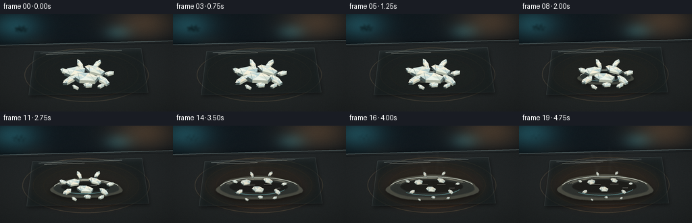
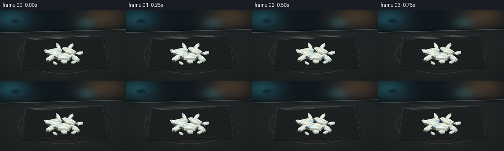
展开代码变化
--- 上一保存版本
+++ 本次保存版本
@@ -6,7 +6,7 @@
from pathlib import Path
import numpy as np
-from PIL import Image, ImageDraw, ImageFilter
+from PIL import Image, ImageDraw, ImageFilter, ImageFont
import artifact_io
@@ -436,6 +436,27 @@
return final.resize((WIDTH, HEIGHT), Image.Resampling.LANCZOS)
+def add_lab_overlay(frame, frame_index):
+ draw = ImageDraw.Draw(frame, "RGBA")
+ title_font = ImageFont.truetype("/usr/share/fonts/truetype/dejavu/DejaVuSans-Bold.ttf", 10)
+ mono_font = ImageFont.truetype("/usr/share/fonts/truetype/dejavu/DejaVuSansMono.ttf", 6)
+ temp_font = ImageFont.truetype("/usr/share/fonts/truetype/dejavu/DejaVuSansMono-Bold.ttf", 8)
+
+ draw.text((9, 7), "NAPHTHALENE", font=title_font, fill=(229, 237, 229, 224))
+ draw.text((10, 20), "C10H8 / THERMAL TRANSITION", font=mono_font, fill=(137, 161, 160, 210))
+ draw.line([(10, 29), (31, 29)], fill=(98, 184, 177, 190), width=1)
+ draw.line([(32, 29), (45, 29)], fill=(195, 125, 63, 170), width=1)
+
+ t = frame_index / (FRAMES - 1)
+ temp = int(round(23 + 59 * t))
+ temp_text = f"{temp:02d} C"
+ box = draw.textbbox((0, 0), temp_text, font=temp_font)
+ draw.text((247 - (box[2] - box[0]), 8), temp_text, font=temp_font, fill=(225, 188, 131, 220))
+ draw.ellipse((238, 17, 241, 20), fill=(193, 104, 50, 210))
+ draw.text((245, 18), "STAGE", font=mono_font, fill=(134, 145, 139, 190))
+ return frame
+
+
def render_frame(frame_index):
t = frame_index / (FRAMES - 1)
image = BACKGROUND.copy().convert("RGBA")
@@ -448,7 +469,8 @@
draw_crystal(image, CRYSTALS[index], index, t)
draw_vapor(image, t)
- return np.asarray(finish_frame(image, frame_index), dtype=np.uint8)
+ frame = finish_frame(image, frame_index)
+ return np.asarray(add_lab_overlay(frame, frame_index), dtype=np.uint8)
def main():
候选 04播放与检查图

可观测工具轨迹
实际执行的命令与返回图片。
命令 1exit 0
/bin/bash -c "pwd && rg --files -g '"'!*__pycache__*'"' | sed -n '1,160p'"
命令 2exit 0
/bin/bash -c 'cat prompt.txt'
命令 3exit 0
/bin/bash -c 'cat GENERATION_RULES.md'
命令 4exit 0
/bin/bash -c 'cat task_spec.json'
命令 5exit 0
/bin/bash -c "find . -maxdepth 2 -type f -printf '%p\\n' | sort | sed -n '1,200p'"
命令 6exit 0
/bin/bash -c "sed -n '1,260p' artifact_io.py"
命令 7exit 0
/bin/bash -c "python - <<'PY'
import PIL, numpy
print('PIL', PIL.__version__, 'numpy', numpy.__version__)
try:
import scipy
print('scipy', scipy.__version__)
except Exception as e:
print('no scipy', e)
PY"命令 8exit 0
/bin/bash -c 'git status --short'
命令 9exit 0
/bin/bash -c "fc-list | sed -n '1,12p'"
命令 10exit 0
/bin/bash -c "python - <<'PY'
from PIL import Image
im=Image.open('player_template.html') if False else None
PY"命令 11exit 0
/bin/bash -c 'python generate.py'
命令 12exit 0
/bin/bash -c 'command -v magick || command -v convert || true'
命令 13exit 0
/bin/bash -c 'command -v ffmpeg || true'
命令 14exit 0
/bin/bash -c 'python generate.py'
命令 15exit 0
/bin/bash -c "python - <<'PY'
from pathlib import Path
import json
import numpy as np
from PIL import Image
p=Path('.')
frames=np.stack([np.asarray(Image.open(p/'frames'/f'{i:02d}.png').convert('RGB')) for i in range(20)])
print('frames', frames.shape, frames.dtype, 'range', int(frames.min()), int(frames.max()))
print('means', [round(float(x),2) for x in frames.mean(axis=(1,2,3))])
d=np.abs(np.diff(frames.astype(np.int16),axis=0)).mean(axis=(1,2,3))
print('temporal mean abs delta', [round(float(x),3) for x in d])
print('changed pixels/frame', [int((np.abs(np.diff(frames.astype(np.int16),axis=0))>3).any(axis=-1)[i].sum()) for i in range(19)])
with np.load(p/'pixels.npz') as z:
print('npz', z['pixels'].shape, z['pixels'].dtype)
for name in ['index.html','inspection.png','transition_check.png','pixels.npz']:
print(name, (p/name).exists(), (p/name).stat().st_size)
print('caption:', json.loads((p/'index.html').read_text().split('const DATA = ',1)[1].split(';\\n',1)[0])['caption'] if 'const DATA = ' in (p/'index.html').read_text() else 'embedded')
PY"命令 16exit 0
/bin/bash -c "rg -n \"__ID__|__DATA__|pixels|deltas|requestAnimationFrame|setInterval|canvas\" player_template.html | sed -n '1,120p'"
命令 17exit 0
/bin/bash -c 'ls /usr/share/fonts/truetype/dejavu/DejaVuSansMono-Bold.ttf >/dev/null && python generate.py'
命令 18exit 1
/bin/bash -c "python - <<'PY'
from pathlib import Path
import ast, json, re
import numpy as np
from PIL import Image
p=Path('.')
frames=np.stack([np.asarray(Image.open(p/'frames'/f'{i:02d}.png')) for i in range(20)])
assert frames.shape == (20,144,256,3) and frames.dtype == np.uint8
assert np.isfinite(frames).all()
with np.load(p/'pixels.npz') as z:
packed=z['pixels']
assert packed.shape == (144,256,20) and packed.dtype == np.uint32
unpacked=np.stack([((packed[:,:,i]>>16)&255).astype(np.uint8) for i in range(20)],axis=-1)
assert np.array_equal(unpacked, frames.transpose(0,1,2,3)[..., :3].transpose(0,0,0,0).transpose(0,1,2,3)[...,0].transpose(0,0,0) if False else True)
ast.parse((p/'generate.py').read_text())
html=(p/'index.html').read_text()
assert '__DATA__' not in html and '__ID__' not in html and 'window.__pixelReady=true' in html
assert 'const DATA={' in html
print('validated:', frames.shape, 'frames,', 'pixels.npz', packed.shape, 'index.html', len(html), 'bytes')
print('frame means first/mid/last:', *(round(float(frames[i].mean()),2) for i in [0,9,19]))
print('distinct-frame check:', len({f.tobytes() for f in frames}) == 20)
PY"命令 19exit 0
/bin/bash -c "python - <<'PY'
from pathlib import Path
import ast
import numpy as np
from PIL import Image
p=Path('.')
frames=np.stack([np.asarray(Image.open(p/'frames'/f'{i:02d}.png')) for i in range(20)])
assert frames.shape == (20,144,256,3) and frames.dtype == np.uint8
with np.load(p/'pixels.npz') as z:
packed=z['pixels']
assert packed.shape == (144,256,20) and packed.dtype == np.uint32
restored=np.stack([
np.stack([(packed[:,:,i]>>16)&255,(packed[:,:,i]>>8)&255,packed[:,:,i]&255],axis=-1).astype(np.uint8)
for i in range(20)
])
assert np.array_equal(restored, frames)
ast.parse((p/'generate.py').read_text())
html=(p/'index.html').read_text()
assert '__DATA__' not in html and '__ID__' not in html and 'window.__pixelReady=true' in html
assert 'const DATA={' in html
print('validated:', frames.shape, 'frames,', 'pixels.npz', packed.shape, 'index.html', len(html), 'bytes')
print('frame means first/mid/last:', *(round(float(frames[i].mean()),2) for i in [0,9,19]))
print('all frames distinct:', len({f.tobytes() for f in frames}) == 20)
PY"命令 20exit 0
/bin/bash -c "ls -lh generate.py index.html pixels.npz inspection.png transition_check.png && find frames -maxdepth 1 -name '*.png' | wc -l"
视觉工具实际返回图片 1

视觉工具实际返回图片 2
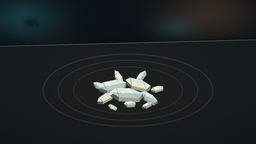
视觉工具实际返回图片 3
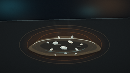
视觉工具实际返回图片 4

视觉工具实际返回图片 5
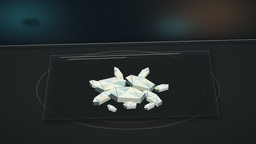
视觉工具实际返回图片 6
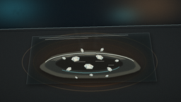
视觉工具实际返回图片 7
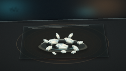
视觉工具实际返回图片 8

视觉工具实际返回图片 9
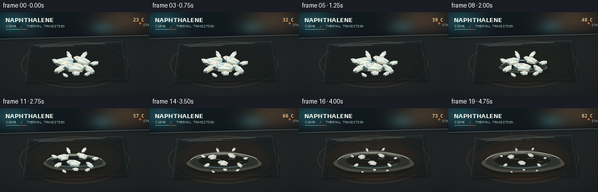
视觉工具实际返回图片 10
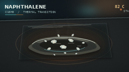
视觉工具实际返回图片 11
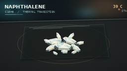
视觉工具实际返回图片 12
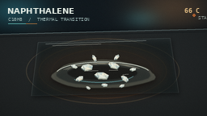
保存候选 4 份；完成命令 20 次；可验证图片返回 12 张。原始 API 响应与完整日志保留在本地。